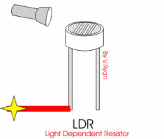
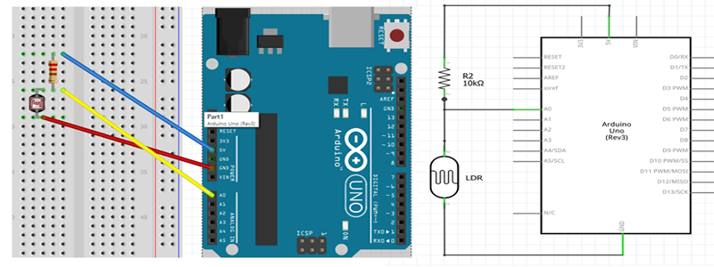

LDR-Light Dependent Resistor
Overview

LDR that allow you to detect light. They are small, inexpensive, low-power, easy to use and don't wear out. For that reason they often appear in toys, gadgets and appliances. LDR is basically a resistor that changes its resistive value (in ohms Ω) depending on how much light is shining onto the squiggly face. They are very low cost, easy to get in many sizes and specifications.
Working of LDR
LDR is basically a resistor that change resistance depending upon the intensity of light falling on it. When the light intensity increases the semiconductor layer gets excited leading to the generation of charge carries hence better conduction that means lower resistance.
Interface with Arduino
Bread Board Layout
Arduino Code
const int ldr = 0; //A0 assigned as LDR pin.
int value = 0; //Store values from LDR.
void setup()
{
Serial.begin(9600); //Fix serial baud rate at 9600bps
}
void loop()
{
value = analogRead(ldr); //Read the analog values from LDR.
Serial.println(value); //Print to serial monitor.
delay(250); //Delay of 250 milliseconds (1/4th of a second).
}